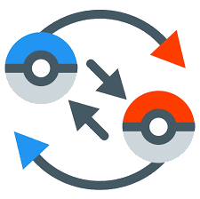
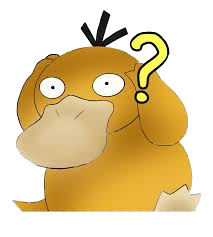

Hoe Pokémons vangen?
Voorbereiding:
Draag Pokémon bij je die andere Pokémon kunnen verzwakken zonder ze te doden.
Pokémon vinden:
Ga naar graslanden, grotten, wateren of andere specifieke locaties waar Pokémon voorkomen.
In sommige spellen kunnen bepaalde Pokémon op specifieke tijdstippen van de dag worden gevonden.
 Een zwakkere aanval gebruiken:
Gebruik aanvallen die de HP (Hit Points) van de wilde Pokémon verminderen zonder ze te doden.
Probeer de HP van de Pokémon zo laag mogepjk te krijgen zonder ze uit te schakelen.
 Statusveranderingen aanbrengen:
Probeer de wilde Pokémon te verlammen, in slaap te brengen of te verwarren.
Dit maakt het gemakkepjker om de Pokémon te vangen, omdat het hun acties vermindert.
 Een Pokébal gebruiken:
Een Pokébal gebruiken:
Selecteer een Pokébal uit je tas en gooi deze naar de Pokémon.
Het is vaak effectiever om speciale ballen te gebruiken, zoals Great Balls of Ultra Balls, bij het vangen van sterkere Pokémon.
Timing is belangrijk: druk op de knop om de Pokébal te gooien wanneer het cirkel rond de Pokémon klein is.
Herhaal indien nodig: als de Pokémon ontsnapt, herhaal dan het proces met meer Pokéballen totdat je de Pokémon vangt.